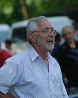

Судьи на выставке:
ОЛЕГ
ВАСИЛЬЕВ РОССИЯ
РОССИЯ
ЕЛЕНА
ГИНДУЛЛИНА РОССИЯ
РОССИЯ
JOVICA
GOLUBOVICсербия
БОРДОСКИЙ ДОГ (ПК) - судья JOVICA GOLUBOVIC (Сербия)
ЗОЛОТИСТЫЙ РЕТРИВЕР (ПК) - судья JOVICA GOLUBOVIC (Сербия)
ЛАБРАДОР РЕТРИВЕР (КЧК) - судья JOVICA GOLUBOVIC (Сербия)
КИТАЙСКАЯ ХОХЛАТАЯ СОБАКА (ПК) - судья JOVICA GOLUBOVIC (Сербия)
КОНТИНЕНТАЛЬНЫЙ ТОЙ СПАНИЕЛЬ (ПК) – судья JOVICA GOLUBOVIC (Сербия)
ШИ ТЦУ (ПК) – судья JOVICA GOLUBOVIC (Сербия)
ЯПОНСКИЙ ХИН (ПК) – судья JOVICA GOLUBOVIC (Сербия)
РУССКАЯ ПСОВАЯ БОРЗАЯ (КЧК) – судья JOVICA GOLUBOVIC (Сербия)
Судьи на выставке:
КИРИЛЛ
БАРБОСОВВ РОССИЯ
РОССИЯ
ТАТЬЯНА
МОРДВИНОВА РОССИЯ
РОССИЯ
ТАТЬЯНА
ГРИШИНАhjccbz
РУССКИЙ ЧЕРНЫЙ ТЕРЬЕР (КЧК) – судья КИРИЛЛ БАРБОСОВ (Россия)
РАССЕЛ ТЕРЬЕРЫ (КЧК) – судья ТАТЬЯНА МОРДВИНОВА (Россия)
БИГЛЬ (КЧК) – судья КИРИЛЛ БАРБОСОВ (Россия)
Целевые взносы
на организацию зоотехнических мероприятий:
До 30 апреля – САС / МОНО - 1800 (беби, щенки, ветераны - 1300), САС+МОНО (одного клуба) – 3500 (беби, щенки, ветераны - 2500)
С 1 мая – САС / МОНО - 2000 (беби, щенки, ветераны - 1500), САС+МОНО (одного клуба) – 3900 (беби, щенки, ветераны - 2900)
С 1 июня – САС / МОНО - 2300 (беби, щенки, ветераны - 1600), САС+МОНО (одного клуба) – 4500 (беби, щенки, ветераны - 3100)
Конкурсы (пары, питомники, производители) - 400 рублей, с обязательным внесением в каталог.
гарантийноые письма
на организацию зоотехнических мероприятий:
весь период записи (без скидок)
- 2500 руб. - Сертификатные классы (юниоры и взрослые собаки)
- 2000 руб. - Беби, щенки, ветераны
Форма для заполнения Гарантийного письма на все выставки:
- можно заполнить форму расположенную ниже на сайте,Записаться можно также у регистраторов на выставках:
8-916-338-05-42 (Елена, Светлана),место проведения выставки:
Москва, ТРЦ «ЧАЙНА-ТАУН»,
пересечение МКАД и Варшавского шоссе: 32-й км (внешняя сторона).
Как добраться:
● Маршрутками № 1142 от м. «Бульвар Дмитрия Донского».
● Автобусом № 37 от метро «Теплый Стан» и «Красногвардейская» остановка: платформа «Битца».
● Электричкой - от Курского и Белорусского вокзалов и станции «Москва-Каланчёвская» до остановки платформа «Битца».